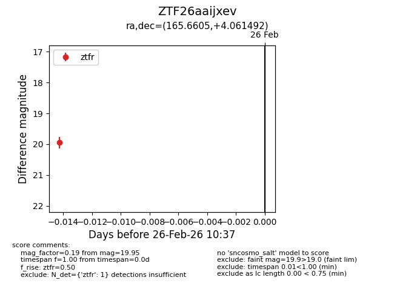
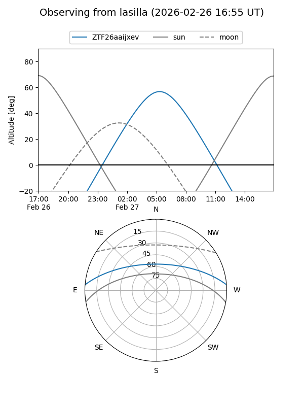
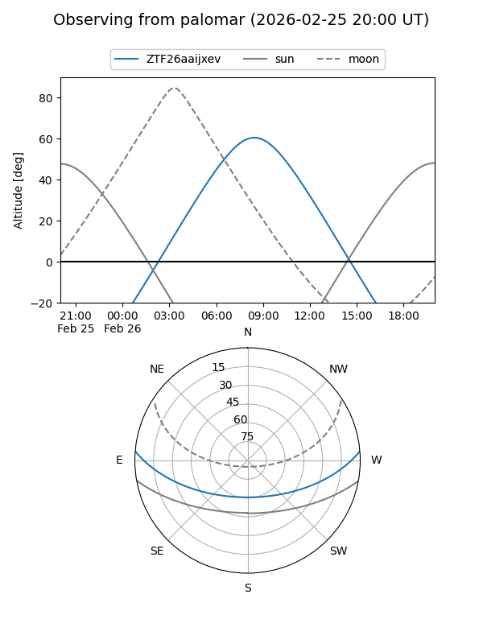

ZTF26aaijxev
Target ZTF26aaijxev at 2026-02-26 10:38
Aliases and brokers:
FINK: link
Lasair: link
ALeRCE: link
alt names
ZTF26aaijxev (ztf,fink_ztf)
Coordinates:
equatorial (ra, dec) = 165.6605,+4.06149
equatorial (HMS+DMS) = 11:02:38.51,+04:03:41.37
galactic (l, b) = (249.7663,+55.27393)
Flags:
Photometry:
last ztfr=19.95
1 ztfr detections
Lightcurve

Visibility


Additional plots